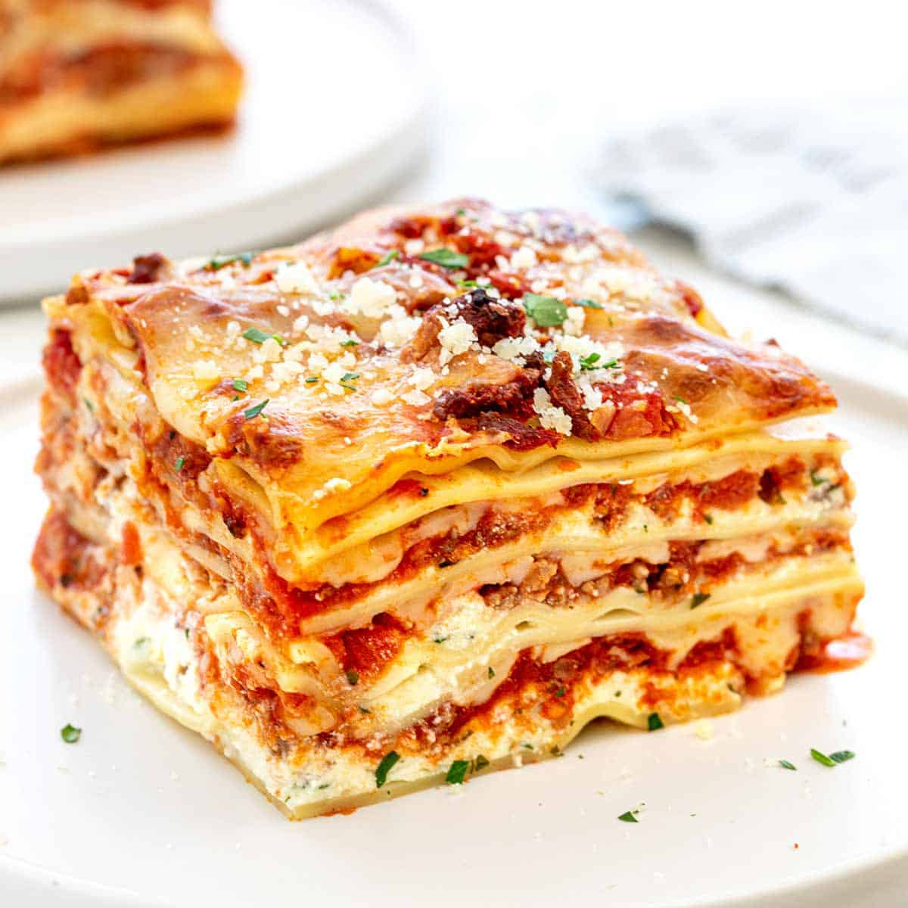

Lasagna

This delicious yum-yum recipe consists of 2 hours to prepare, make and bake, yielding up to 10 servings, enough for a family or 2!
To start making this, preheat the oven to 190 degrees celsius. Then, make the sauce by adding and then stirring onion, garlic and ground beef.
After which, add spagetti sauce, tomato sauce and oregano. Time for the lasagna! mix mozarella, provolone in one bowl, followed by ricotta, milk,
eggs and oregano in another bowl. Layer all these in a baking dish and cover and bake in the preheated oven for roughly 45 minutes. Voila! you
made your very own homemade meat lasagna!
- Olive oil
- Onion
- Garlic
- Ground beef
- Sausage flavoured spaghetti sauce
- Tomato sauce
- Oregano
- Mozarella cheese
- Provolone cheese
- Ricotta cheese
- Milk
- Eggs
- Lasagna noodles
- Parmesan cheese
-
Preheat the oven to 375 degrees F (190 degrees C).
-
Make the sauce: Heat oil in a large saucepan over medium-high heat. Add onion and garlic; cook and stir until translucent, about 5 minutes.
Add ground beef and garlic powder; cook and stir until browned and crumbly, 5 to 7 minutes. Drain and discard grease.
Add spaghetti sauce, tomato sauce, and oregano; cover and simmer for 15 to 20 minutes.
-
Make the lasagna: Mix mozzarella and provolone together in a medium bowl. Mix ricotta, milk, eggs, and oregano together in another bowl.
-
Ladle sauce (just enough to cover) into the bottom of a 9x13-inch baking dish.
Layer sauce with three lasagna noodles, more sauce, ricotta mixture, and mozzarella mixture; repeat once more using all of remaining cheese mixtures.
Layer with remaining three lasagna noodles and remaining sauce, then sprinkle Parmesan over top.
-
Cover and bake in the preheated oven for 30 minutes. Uncover and continue to bake until cheese is melted and top is golden, about 15 minutes longer.